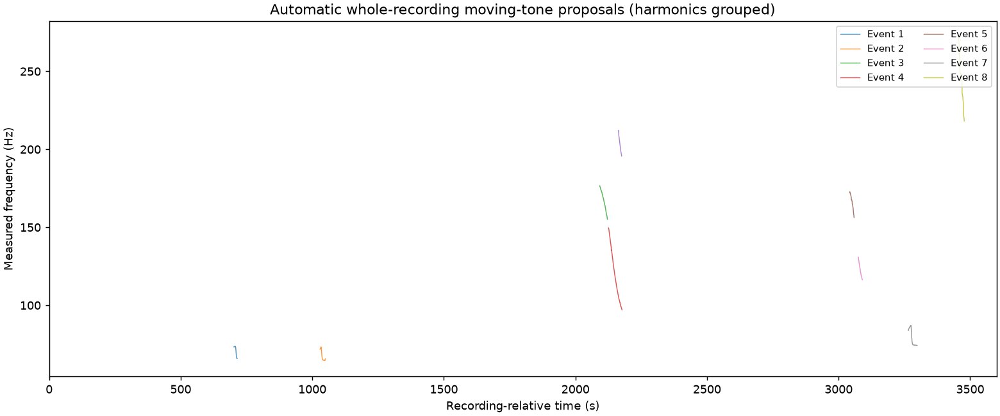
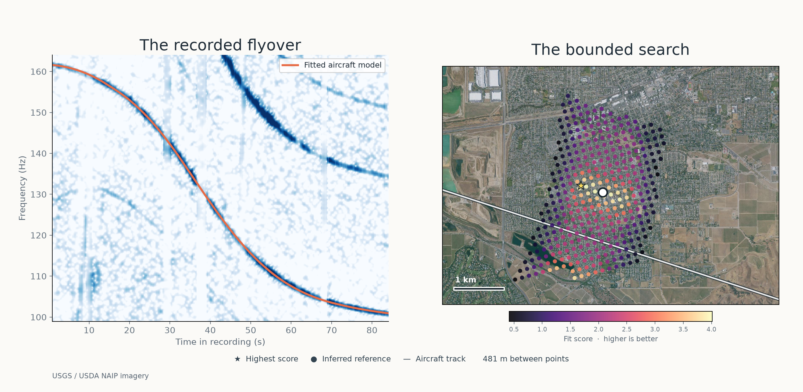
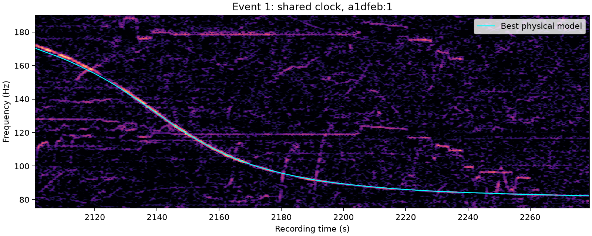

01 / Audio discovery
Detect the shifting tone.
Scan the recording for moving frequency ridges. Group harmonics that may belong to one flyover, including faint events buried in background sound.
Acoustic discovery docs ↗
Aircraft change their apparent frequency as they approach and recede. DOPPLERGEIST extracts that curve from a recording, models the flight, and searches for where the microphone could have been.

Scan the recording for moving frequency ridges. Group harmonics that may belong to one flyover, including faint events buried in background sound.
Acoustic discovery docs ↗
Obtain historical ADS-B aircraft trajectories for the recording's UTC time window. Flight positions, velocities and altitude constrain which aircraft could have produced the sound.
Flight-data architecture ↗
Simulate Doppler shift and sound-arrival timing at possible receiver positions. Compare the modeled curve to the frequency track actually heard in the audio.
Technical methodology ↗
Evaluate geographic candidates against the observed and modeled signals. Multiple flyovers can constrain the same microphone position and recording clock.
Search and decision rules ↗Use the local web interface or the command line. No public upload account is required.
git clone https://github.com/1337isnot1337/DOPPLERGEIST.git
cd DOPPLERGEIST
python -m venv .venv
.venv/bin/python -m pip install .
.venv/bin/dopplergeist serve --jobs jobs --online --port 8765Then open http://127.0.0.1:8765 on your computer. Historical matching requires a justified recording-time window. Complete setup instructions ↗
Browse the Livermore experiments, Doppler fits, automatic detection results and location-score maps.
Open the example gallery ↗